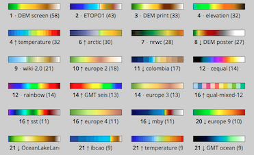

PaletteKnife lets you use thousands of high-quality color palettes from "cpt-city" in your FastLED animations.
A basic understanding of FastLED color palettes is absolutely required.
To get started with FastLED color palettes, run the FastLED "ColorPalette" example, and review the included notes/comments to refresh your understanding of what FastLED color palettes are, and how to program with them. If you skip this step, nothing that follows will make sense or work. It's not too complicated, but there is no substitute for hands-on experience here.
A second palette-use example, "Fire2012WithPalette", is also included with FastLED.
Drag this bookmarklet into a browser toolbar: [PaletteKnife]
Example:
CRGBPalette16 myPal = purplefly_gp;
then
static uint8_t index = 0; index++; fill_palette( leds, NUM_LEDS, index, 6, myPal);
or
leds[i] = ColorFromPalette( myPal, index);
All color palettes from cpt-city are "gradient palettes", which are discussed here: Gradient color palettes.
If you want to cross-fade between one palette and another, check out this post, video, and sample code on G+: Color Palette Crossfades